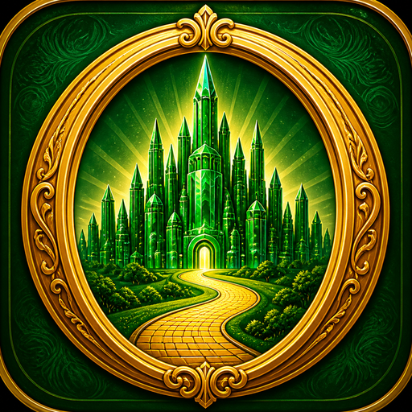
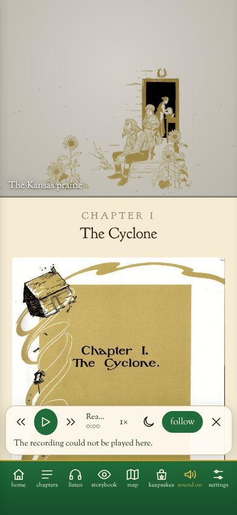
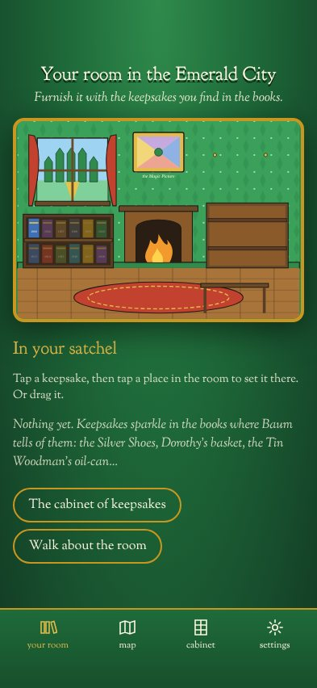

cyberfugue · iPhone, iPad and Android

Worlds of Oz
Step through the cyclone into the Land of Oz. L. Frank Baum’s The Wonderful Wizard of Oz, with every one of W. W. Denslow’s pictures of 1900, The Marvelous Land of Oz, with every one of John R. Neill’s pictures of 1904, Ozma of Oz, Dorothy and the Wizard in Oz, The Road to Oz, The Emerald City of Oz, The Patchwork Girl of Oz, Tik-Tok of Oz, The Scarecrow of Oz and Rinkitink in Oz, with every one of Neill’s pictures of 1907 to 1916, each complete and read aloud by either of two LibriVox readers with each word lit as it is spoken. More of the books of Oz are on the road of yellow brick.


Three ways to see Oz
Beside the text, Oz is shown the way you choose: Storybook, the first edition’s own pictures waking at the words; Walk into Oz, Oz in three dimensions, the road of yellow brick under your feet; or Paper theatre, a toy theatre whose scenery stands up as the story is read. Come into Oz through the Gates of the Emerald City, over the map of Oz, or from your own room.
Keepsakes for your room
The Silver Shoes, the Tin Woodman’s oil-can, the Golden Cap, Jack Pumpkinhead’s head, the pepper-box of the Powder of Life, Billina’s egg, the Nome King’s magic belt, the Wizard’s lantern, the shaggy man’s Love Magnet, a Whimsie’s pasteboard head, a square of the Patchwork Girl’s quilt, the dragon Quox’s golden locket, Cap’n Bill’s spare wooden leg, the Pink Pearl of Pingaree: keepsakes sparkle where Baum tells of them, and some are earned by doing (oiling the Woodman, saying the charm of the Cap, counting seventeen by twos with a wishing pill, winding up Tiktok, throwing Billina’s egg at the Nome King, counting the Wizard’s nine tiny piglets, catching the Scoodlers’ heads, staring down the Lion with Aunt Em, plucking the six-leaved clover, winding up Tik-Tok, bringing the Scarecrow across the spider’s bridge, pulling King Rinkitink out of the well). Set them out in your room in the Emerald City, outside the books, whose walls take the colours of the countries of Oz, and whose alcoves open one by one for each book. A cabinet waits for the keepsakes of the four books to come.
What is free
Chapter I of each book is free. The whole book is one purchase ($3.99 in the US); All the books of Oz ($17.99) opens every book, including every one added later.
Made from Baum’s text and the first editions’ pictures, which are in the public domain. Support · Privacy